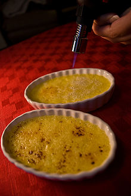

- Tatafred (@Tatafred1) • Twitter
Die Creme in kleine Förmchen füllen und mindestens 2 Stunden kühlen. Beeren mit Vanillezucker sowie dem restlichen Kirschwasser marinieren und durch ein Sieb passieren. Die Förmchen auf Teller stürzen, passierte Beeren als Fruchtspiegel um die Bayerische Creme geben und mit frischen Erdbeeren, Himbeeren und jeweils einem Minzeblatt garnieren. - ᐅᐅNoreva Exfoliac Getönte Creme • Die momentan populärsten ...
Gesichtscreme selber machen: So können Sie eine Hyaluronsäure-Creme selber mac… ist auch eine der beliebtesten Kategorien auf Pinterest, wie hautpflege produkte selber machen und andere. Daher denke ich, dass mein Profil für Leute sehr nützlich sein wird, die Schlussfolgerungen zu diesen Kategorien von Hautpflege Selber Machen und ... - Nanovein Premium Creme kaufen → €29.00 [Top Angebot] – baaboo
Nanovein Premium günstig kaufen - Preisvergleich. Die Creme Nanovein Premium bekommst Du zum einen über den Hersteller (€39.00) über einige Händler auf eBay (bis zu €51.89) oder direkt hier bei baaboo für (€29.00).Wir bei baaboo haben zur Zeit nicht nur einen günstigen Preis sondern bieten Nanovein Premium auch in der Größe 75 ml statt 50 ml an. Ein Top Angebot! - Kokosöl Creme gegen Schuppenflechte selber machen - Rezept ...
Welche Kriterien es beim Bestellen seiner Noreva Exfoliac Getönte Creme zu beurteilen gibt! Zudem hat unser Team schließlich eine hilfreiche Checkliste als Entscheidungshilfe gesammelt - Damit LSF 20 - Durch den Lichtschutzfaktor 20 schützt die getönte Feuchtigkeitscreme vor äußeren Einflüssen und lichtbedingter Sie zu Hause unter all den Noreva Exfoliac Getönte Creme der Noreva ... - Cremeataston (@Cremeataston) • Twitter
Creme gegen Gel Obwohl wir sowohl Creme als auch Gel verwenden, um sie auf unseren Körper aufzutragen, gibt es einen Unterschied zwischen ihnen. Es gibt viele Arten von Schönheits- und Hautpflegeprodukten auf dem Markt, die in Form von Cremes, Lotionen, Gelen und Salben erhältlich sind. - Les Vitalities Creme - Bewertungen, Preis und Bezugsquellen?
Nivea Creme Soft Flüssigseife, 250 ml Extra-reichhaltig mit Mandelöl Schützt die Hände vor dem Austrocknen pH-hautneutral Hautverträglichkeit dermatologisch bestätigt Entdecken Sie die intensive Pflege von NIVEA MPN:80700 Cashmere Moments Milde Cremeseife mit Cashmere-Proteinen und Orchideenduft. - Nivea Creme soft Flüssigseife 250ml günstig kaufen ...
We would like to show you a description here but the site won’t allow us. - Neck Creme Anti Aging Falten Entfernung Creme Bleichen ...
LE LIFT La Crème Main ist wie eine Anti-Aging-Pflege konzipiert und bewahrt das jugendliche Aussehen der Hände, denn meist sind an ihnen die ersten Altersanzeichen zu erkennen. Die Formel verbindet die Kraft eines botanischen Alfalfa-Konzentrats, so leistungsstark wie Retinol* und dabei sanft zur ... - Herren-Schleife stilsichere Seide creme | Einstecktuch.com
Kokosöl Creme gegen Schuppenflechte selber machen – Rezept & Anleitung Kokosöl Kosmetik selber machen – Rezept für selbst gemachte Kokosöl... - Candidol Creme | Kampf gegen Mykose und Pilz um die Füße
Hydro Creme - mit Anti Aging Effekt Schütze Deine Haut vor Umwelteinflüssen und spende ihr genügend Feuchtigkeit. Angereichert mit Q10 und Hyaluronsäure sagt die feuchtigkeitsspendende HydroCreme der Hautalterung und den unliebsamen Falten dem Kampf an... Für ein schönes, frisches Hautbild mit mehr Spannkraft und Elastizität!
